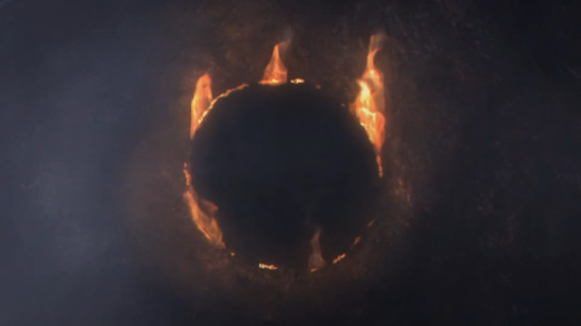

The Story of Dark Souls
Age of Dragons
In the begginging, neither light, nor dark existed. Life or death was not present. Dragons, with immortal scales roamed the world. Little is known of how the dragons came to be, but they could not die, or produce offspring. They simply existed before time itself. They nested inside large trees that held up the earth above. They did not kill or eat anything. The records of this time, do not exist except for the storys left behind by dragons left over during the age of light.
A flame and a War
Suddenly, in the midst of an everlasting state of the world, a small ember of flame found its way deep beneath the trees. It ignited, and in the flame, rested four powerful souls. The first soul, the soul of Light, would be harnessed by Gwyn. The second soul, the soul of Death, granted to Nito. The soul of life would be split amongst sisters, known now as The Witches of Izalith. Finally, the last soul would be carried and split amongst man. The Dark Soul.
With their new found power, and the power of the flame on their side, the lords challenged the eternal dragons. hoping to seize the land and bring about a new age. Gwyn and his army of knights used their Lightning to peel away the immortal scales of the dragons, making them vulnerable. Nito would spread disease across the land, while the Witches burned down the trees in which the dragons would slumber.
amongst the dragons, lay a scaleless one, a dragon who was not born with scales. Seath. In a promise made to him by Gwyn, Seath would betray his fellow kin in alliance with the lords. He slaughtered his own kind, as Gwyn had promised him a piece of his Lord Soul in return.
Gwyn, assigning four of his most powerful warriors into a platoon to push back the dragons. The first knight, and leader, Ornstein, who used Gwyns infamous lighting to peel away the scales of the dragons with his trusted spear. Second in command Artorias, unmatched with a greatsword and armed with a greatshield, would use his combat abilities to defeat the dragons in combat. Hawkeye Gough, a sharp shooter who never missed would target their wings, as to disable their ability to flee. Finally Ciaran, quick with her dual blades, would inflict poison onto her target, rendering them weak. These four knights would earn legendary status during the warring times.
With victory in hand, the "Age of Dragons" was over. So began the...
Age of Light
Gwyn would move his people and knights to the land above the trees, in which he would build his city in the sunlight. He would call it, Anor Londo. The Witches would stay beneath, building their own city of Izalith, in which they would create beings of life. Nito, residing in the catacombs between above and below ground, would look after the dead. And so the new age would rest. But peace shall not last long.
Many new and old threats would haunt Gwyn. In his position of ruler, he would have many enemies looking to overthrow him and his now children. In order to keep his political enemies down, he would use Ciaran as an assassin in this new age, to poison his enemies swiftly. She would come most useful in fighting against a cult uprising that threatened to use dark agaisnt Gwyn and his people. The few dragons that still flew overhead, were shortly being hunted down by Hawkeye Gough, as was his orders given by Gwyn himself. To protect his children, he assigned Ornstein himself to watch over them in the captital, along with Execution Smough. The most pressing threat to Gwyns power however, was that of the dark. The age of man was inevitable, but that did not stop Gwyn from challenging fate itself. He would have his best swordsman, Artorias, battle any rumors sprouting from what could be threats of the dark. With everything in place, and plenty of contingencies to fall back upon, surely an eternal "Age of Light" would remain?

A flame fades
The First Flame, and the source of the Lord Souls power started to fade. Reinforcing the inevitability of the age of dark. Gwyn would take measures to try and grasp as much of his "Age of Ligh" back from the clutches of collapse. He would ask the Witches of Izalith, the holders of the Soul of Life, to create another First Flame. To replace the old. However, the first moment of defeat came about. In a twisted turn of events, the Witches of Izalith and their city, would be consumed by this new power, known as the Flame of Chaos. Spawning creatures to the name of demons and monsters. This would lead Gwyn to form an army, lead by Havel "The Rock", another legendary knight from the warring era, to battle against the newly born demons of Izalith.
Gwyns exapansion of his land would halt, as New Londo, a city set to be one of his crowning accomplishments, would fall to the dark. While his entrusted knight Artorias would seal away the city and prevent the spread of dark, it was not without its painful realization of total collapse.
Nito, now overwhelmed with the demons of the land, would lose grip on his power over the dead. Leaving husks across the land, undead roaming streets and forrests. In tow, Gwyn created an asylum for this new threat. Throwing rotting corpses into areas that would leave the living unbothered.
Again, another city would fall to the dark. this time in a much larger loss to the stability of this age. Oolacile had awoken primeval man, slumbering beneath their city. It is unknown whether this being was the progenator of man, the original holder of the Dark Soul, but the cold, corrupted aura could be felt all throughout. Something evil had been disturbed. In good faith, Gwyn entrusted Artorias to defeat this enemy of the light. Artorias would succeed, at the cost of his life. With no other knight capable of pressing back agaisnt the abyss, if another event were to occur, it would spell disaster for Gwyn. To add onto this loss, at the same time as Oolacile collapsing, Hawkeye Gough would be hunting the last known everlasting dragon Kalameet. Unfortunetly Gough had been blinded by The Cult that waged war against their ruler Gwyn. However, Gough would defeat Kalameet, before swiftly retiring afterwards.
Gwyn had now lost almost total control over his land. The flame still fading. In a final message to man, he would place a curse on all those who had a fragment of the Dark Soul. So that they could never die, but instead wilt away, losing their minds over time.

Gwyn would then commit what would later become known as, The First Sin. He would prolong the age of Light, by sacrificing himself into the First Flame.
Age of Man
Throughout the game, the player must collect all the lord souls that originated from the begginging, and return them to the First Flame. Those to kill, included The Four Kings, who had recieved a piece of Gwyns Lord Soul, as well as Seath. The Witches of Izalith and their Soul of Life. Nito and his Soul of Death. Various advesaries, and disiples of the lords stand in the players way. However once all souls have been collected, there lays a choice. Do you extend the age of light, and sacrifice yourself as did Gwyn to keep whatever stability remained in the land? Or do you turn your back on the First Flame and usher in the Age of Dark? The choice is yours, but a useless one at that. As if you extend the flame, it will eventually fade again. To extinguish the flame, would only leave embers, embers that will eventually see the flame reignite. As goes the cycle of Light and Dark, of Life and death.